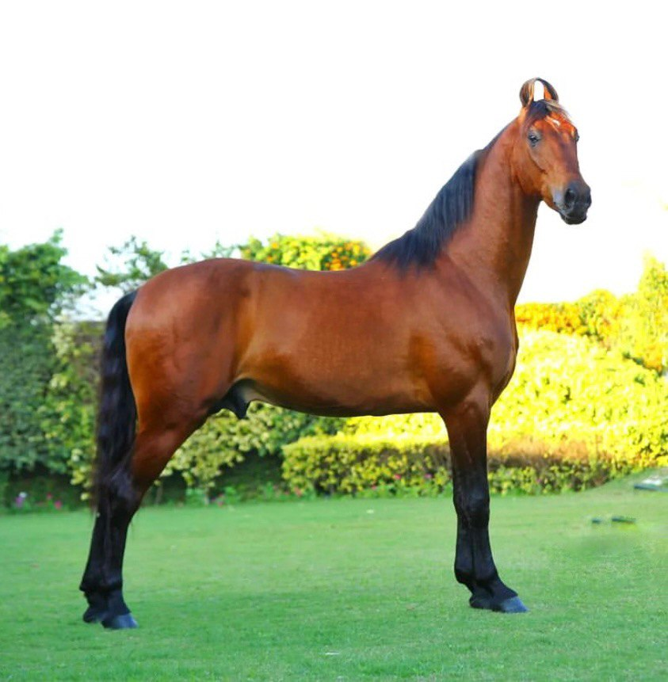
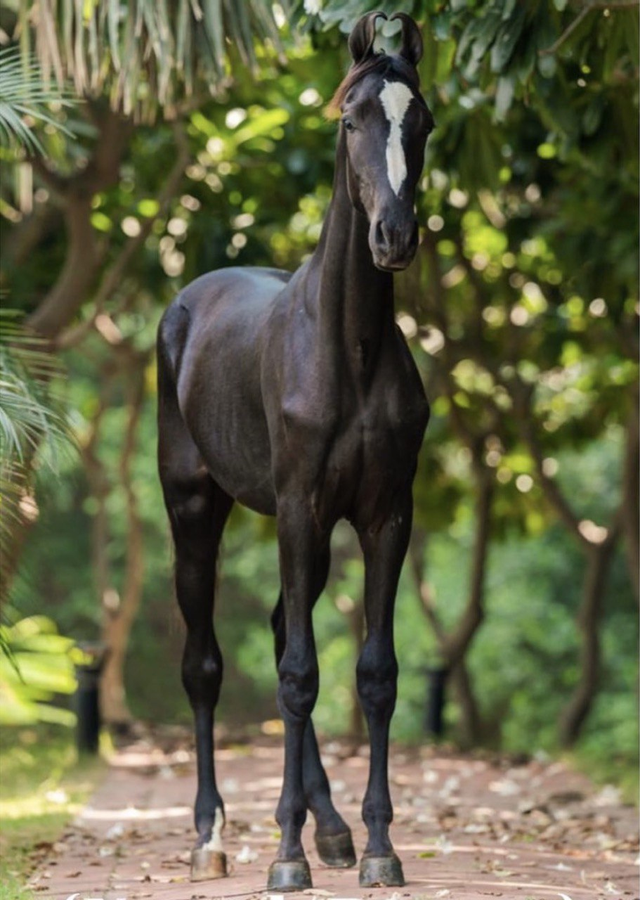
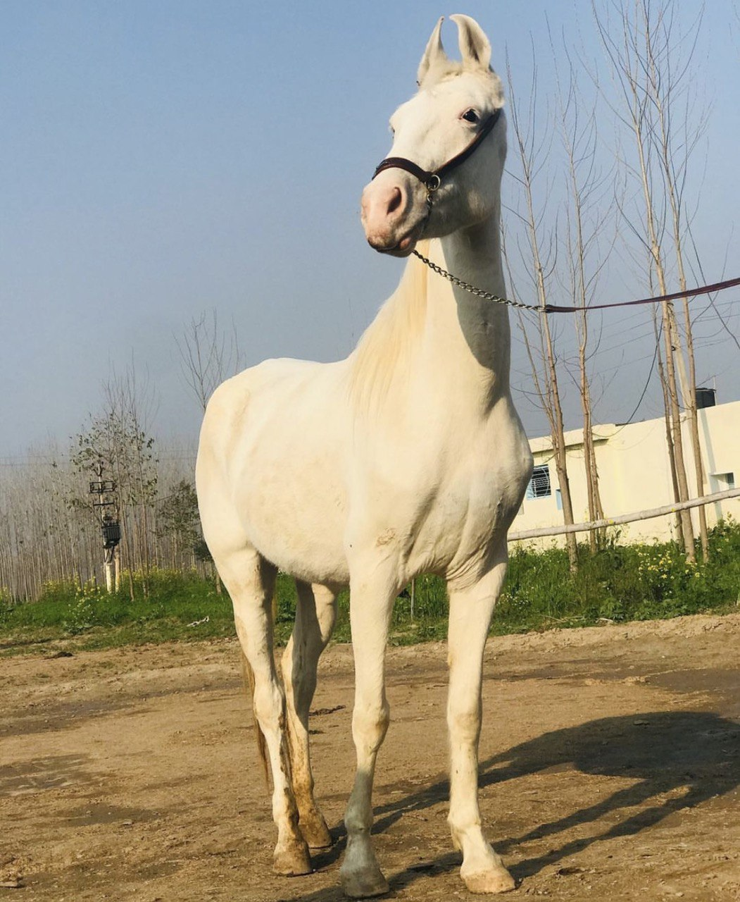

About Gurfateh
Gurfateh Stud Farm has been in the business of breeding horses since 1963 (earlier run as Punjab Stud Farm). Gurfateh has survived the test of time over decades and has carved a niche for itself the Indian Thoroughbred Industry as a boutique farm with consistent performance across all tracks in India. The farm is focused on breeding top quality thoroughbred race horses in India. By quality, we mean a combination of pedigree, conformation, fitness and attitude that a champion needs. At Gurfateh, we are committed to building strong relationships with owners, trainers and racing professionals who are equally passionate about creating champions. The farm is run hands on by the promoters of the farm. From dawn to dusk, every operation in the farm goes under the keen eyes of the management. Our results drive us, and our horses inspire us. Since 2020, Gurfateh bred horses have won 4 classics, 3 Group races and have placed in over 10 Group races with several reaching class 1. In 2021,
sherry

Majhuke bloodline Ace

Colt Nawab Rattan

Mare Noora